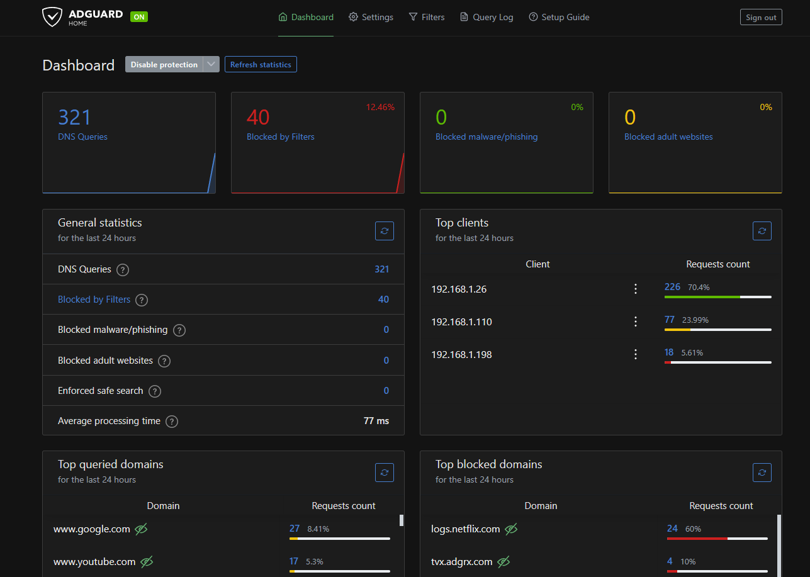

Protecting yourself from the "World Wild Web"
2024, Dec 29
What you have seen of the Internet is most likely just a little tip of the iceberg, so sometimes you just have to protect yourself from it every time you're online on the web. I'm going to give you some guides, from the basic to the most advanced method of protecting you from the obscure internet.
Bare minimum: Firewall
Firewall is the first line of defense for your computer, it's like a gatekeeper that filters the incoming and outgoing traffic of your computer. Most of the operating systems have a built-in firewall, like Windows Firewall for Windows, or UFW for Linux, which are all preconfigured basic level of firewall that's capable of denying unauthorized access by filtering network traffic and blocking malicious content. You can also use third-party firewall software, like GlassWire or ZoneAlarm.
Most firewalls are enabled by default, but if you're wondering if it's enabled on your machine or not, here's a quick overview:

Windows: Go to Control Panel > System and Security > Windows Defender Firewall

MacOS: Go to System Preferences > Security & Privacy > Firewall
Linux: Open a terminal and type sudo ufw status
Intermediate : Software and Security up-to-date
Keeping your software and security up-to-date is the next step to protect yourself from the hidden dangers of the internet. Most of the time, software updates are released to fix bugs and vulnerabilities that can be exploited by hackers. It's important to keep your software up-to-date, especially your operating system, web browser, and antivirus software.
Most of the operating systems have an automatic update feature, so you don't have to worry about updating your system manually. For Windows, you can go to Settings > Update & Security > Windows Update, and for MacOS, you can go to System Preferences > Software Update.
This is also one of the main reasons why you should not use any end-of-support (EOS) operating system such as Windows 7 or lower, as most of them do not have up-to-date security patches and are vulnerable to attacks.
Advanced: Adblock and "host" file
Ad blockers are browser extensions that block ads on websites, which can also block malicious content and trackers. There are many ad blockers available, but for my personal reference, I would recommend you to use uBlock Origin, although Chrome's newest Manifest v3 update may affect its functionality (everyone thanks Google !!).
Another method is to use the "host" file to block malicious websites. The "host" file is a text file that maps hostnames to IP addresses, and you can use it to block access to certain websites by redirecting them to a non-existent IP address. You can find the "host" file in the following directory:
Windows: C:\Windows\System32\drivers\etc\hosts (You may have to open it using any text editor with administrator privilege)

I recommend to check out someonewhocares's host file, which contains many of dangerous websites and trackers. They also have a short guide for installation in other OS such as macos and Linux.
Optional: AdGuard Home
AdGuard Home is a network-wide software for blocking ads and tracking. After you set it up, it'll cover ALL your home devices, and you don't need any client-side software for that. AdGuard Home is a standalone server that runs on your local network, and it acts as a DNS server that filters out ads and trackers. It's a bit more advanced than using an ad blocker, which required a local VPS like a homelab, a Rasberry Pi, or a router that has firmware support such as OpenWrt, but it's worth it if you want to protect all your devices from ads and trackers.
Conclusion
Protecting yourself from the obscure internet is important, as the Internet is a vast place with many dangers. By following these guides, you can protect yourself from most of the threats that are lurking on the web. Remember, it's better to be safe than sorry, and trust me, you would never want your data being exposed on the web.